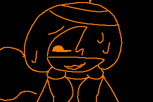
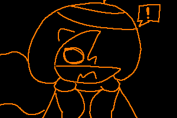
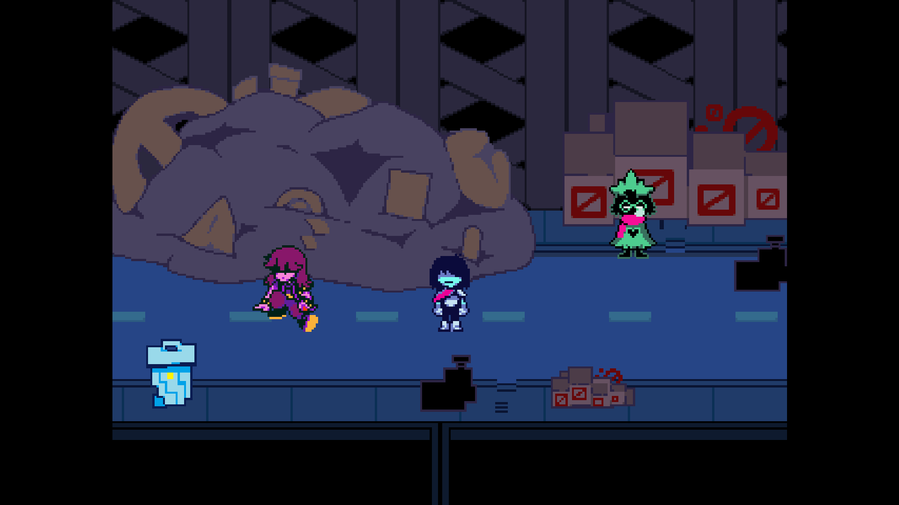
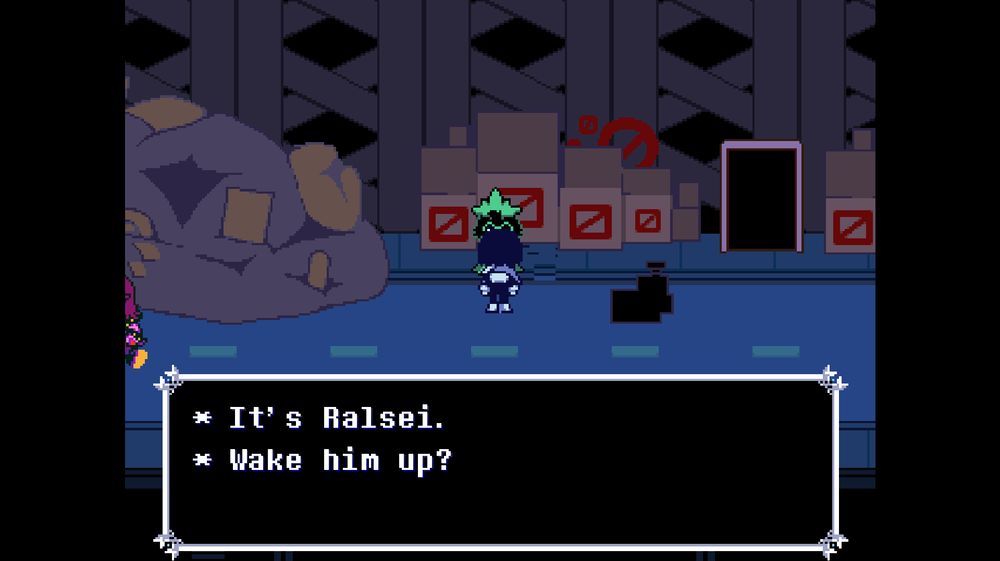
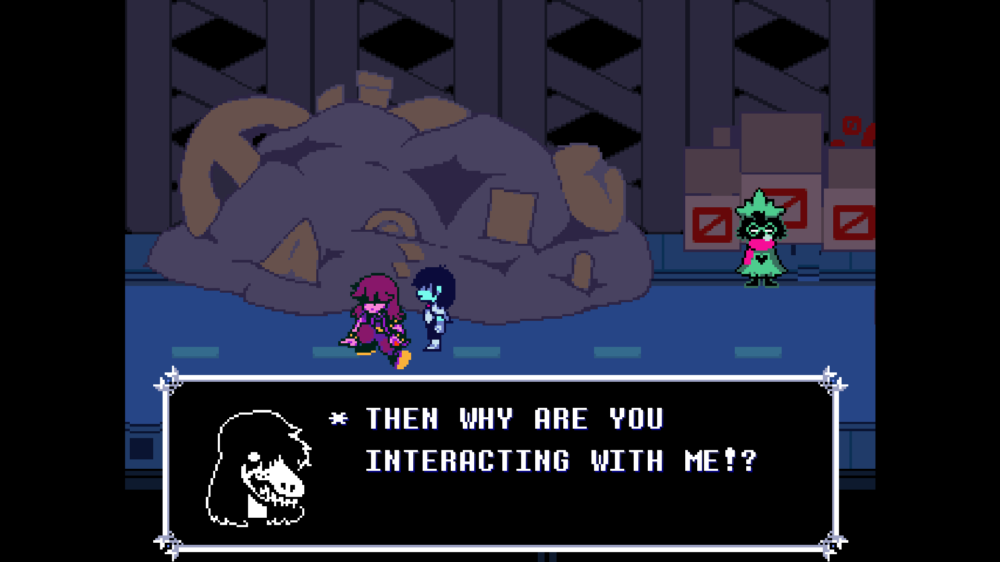
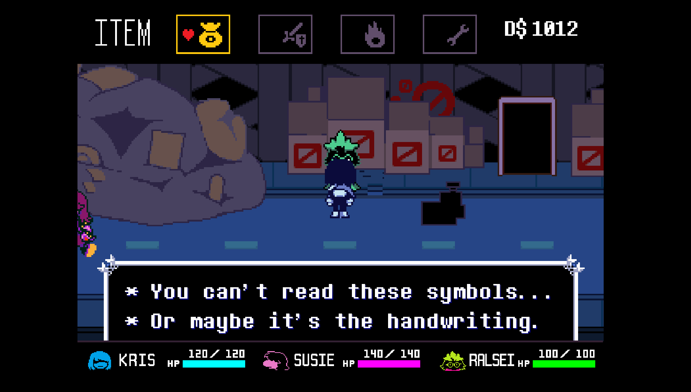

... What?
... The hell is a "newsletter...?"

WOAH--
... That's uh, a couple of people...???
(How did they even get in here???)

Well, whatever the case, HELLO everybody!!!
This is the very FIRST newsletter! Made in... August!


Development's going pretty great so far!
Chapter 3 is pretty much finished, apart from the weird route.
(We'll talk about that later.)
And now with the release of the announcement of "v2.0"...
I can say that's going pretty well, too!

I did kind of get burnt out for a little while...
And, we kinda only just started on v2.0 recently...

But, now that I'm back, I can finally make this mod alot better than before!


Okay, onto the serious stuff now...
I have to say, thank you SO SO SO much for the support!!
Whether it be from some creator, or someone I don't know...
I still have to thank you all!
But, to the people that made gameplay on my mod, I will thank here!
Kmkichi
MelonGod
Null and Void
Rockmanslayer 00
CharmyGamer
Damemomoz87 (did I say that right?)
Seishin
SERIOUSLY! Thank you ALL!
I don't think I would have EVER continued this mod if not for your support...

Right... Weird Route stuff, hm.
Well, for starters, I've seen a couple of people say that Weird Route had more dev time than the normal route.
But uh, I can't really disagree with that.
... because it's true.
And uh, you're probably wondering WHY I made the Weird Route.
The answer is... I honestly don't... know???
Like I genuinely cannot remember why I made the Weird Route like this.
But, uh, alot of things in the Weird Route will change in v2.0.
Like the writing. ESPECIALLY the writing.
Ralsei seems a lot more out of character in the Weird Route, and I've noticed that.

Well, uh, before I do this...
I think we need to stylize it up a bit.
HEEEEEEEEEUUUUUUUGGGGGGGGGGAAAAAAAAAAAAAHHHHHHHHHHHHHHHHHHHH

Oh hey, look, it worked.
Well uh, hey! I'm not pixelated anymore, hello!!!

... Huh.
Never... really noticed how cramped it is in here.

Oh, right! Concepts!


This is an unused enemy for Delayed Development! However this is their more latest design.
The name of this unused enemy is apparently called "Settei."
Which "settei" is Japanese for "Settings" (設定) Neat, huh?
Apparently, according to other concepts, Settei is a support enemy, that makes attacks more difficult.
Attacks for this enemy were apparently, darken the screen so it's harder to see what's going on.
... Actually, that's the only attack I remember, woops.
Well, if you're wondering, (which you probably aren't), their hurt sprite looks like this!

Onto more Unused Content...
Originally, the spell to burn enemies in the Weird Route was called "FirePunch."
And at the time, this was very literal, due to me making an entirely new sprite for it...
And, uh...
... Look, I wasn't great at the time.

Alternatively, here's a more later version of the sprite, alot better, I know.
In this sprite, it was a deattached wrist with flames coming out of it.
Although, you aren't blind, so I don't know why I'm telling you this.
Onto more interesting unused content...

Alternatively, instead of Ralsei waking up from the bang of Susie falling after the coaster scene with Berdly & Queen...

Ralsei would still be asleep, and you would have to go wake him up, which is what Susie tells you to do.
Sadly, I do not have much content of this scene, but I do have some pictures.


And to the surprise of no one, this scene was buggy as HELL. Causing it to become unused, and made the scene we have today.
There's also some other unused content that got pretty far into development before being scrapped.
For example, the Queen Car scene.

Instead of Susie and Ralsei insisting us to go to the shortcut...
They would ORIGINALLY go the normal way, like in the original Chapter 2.

This includes the scene where Noelle would normally be, but instead of it saying "DECEMBER" ... It would say "THRASHER"
But when I got to the ball game type thing, I realized that this would take ages to rewrite, so I just decided to skip the entirety of this scene.
And now for the Acid Tunnel of Love sequence!
People have been asking me why I removed it, to my answer about it was crashing everywhere, so I just removed it, but that's not all that happened.
Not only DID it crash the game almost every part, it also almost made me lose the ENTIRETY of this mod! So that's fun!
You're probably confused on what I mean, so let me explain.
When I was making the Acid Tunnel of Love sequence, It would keep crashing on every single scene I tried to modify. Not sure why.
So I decided to DELETE one of the rooms to make my own version.
Which, uh, didn't go so well. (If you're a mod developer, you know why)
The room order got all jungled, causing the game to be completely out of sync when opening, instead of being in the legend, it would put me into the ROARING legend, like the one at the end of the game almost.
Then, when I skipped it, It put me in Seam's shop.
Me, broken with this, trying his absolute best to fix it. Eventually fixed it, thanks to UTMT's ExportAssetOrder and ImportAssetOrder built in scripts.
Which, thankfully, did work, and allowed me to continue working on the mod.
So, that's when I decided, $$$$ THAT, and just removed the acid tunnel scene in it's entirety.
What I learned?
DON'T DO STUPID $$$$ OR YOU WILL LEARN THE CONSEQUENCES
Ahem, where were we? Oh right, Acid Tunnel scene.

Originally, this went REAL far into development, almost completely finished, before the uh, incident.
Infact, almost every scene was finished! Apart from the Rouxls Kaard scene, which kept crashing.
So, I'll just explain what happened originally.

Originally, in the acid tunnel scene, the dialogue was pretty much the same, apart from him being hatted.
Ralsei would talk about stuff in Chapter 1, where Susie didn't see him take off his hat, so that's why he keeps it on.
Eventually, Ralsei would get interrupted by Kris, by them forcefully taking his hat off.
And then, Ralsei would say:
* I--
* Kris... Thank you...
* Thank you for always being there for me...
* When we fought King...
* I didn't know what was going to happen, hahah...
* We can... talk about this later...
* Let's just enjoy the ride for now, Kris.
God he's so gay-- I MEAN WHAT
Ahem...
Little bonus before we move on!

Originally, people were wondering where Spamton was in my mod, my answer? I FORGOT TO ADD HIM!
So, I decided to readd the SPAMTON scene into the shortcut area, which is why there is a dumpster in that area in the latest available version of the mod.

Also, as a funny little easter egg, I was going to add a reference to Friday Night Funkin' in there, since that used to be what I played a while back.
But sadly, like everything else, it was buggy, so it got scrapped, and I resorted to just adding the interaction with the dumpster.

Well, I think that's all I wanted to say!
Woo... that took a lot of energy.
I'm gonna need a BIIIIG nap after this.
Well, goodbye for now!!!